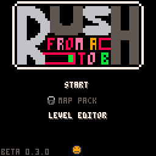

Rush (Changelog)
English page
Newgrounds 
0.5.0
- Ajout du Player de niveau sur la version demo et la version normale
26/04/2018
0.4.0
- Ajout de l'exportation de niveau dans l'éditeur de niveaux
- Ajout du chargement de niveau dans l'éditeur de niveaux
- Ajout de la gomme dans l'éditeur de niveaux
- Changement du click droit, il selectionne le sprite de la case sélectionnée pour l'utiliser plus facilement
13/04/2018
0.3.1
- Correction du niveau 7
- Correction du chronomètre
Version Web
- Ajout d'un bouton vers mon Twitter sur le menu principal
- Ajout d'un bouton pour partager son score sur Twitter
10/04/2018
0.3.0
- Ajout de l'éditeur de niveau
- Modification du forum, pour ajouter un espace pour les niveaux (par ici)

20/02/2018
0.2.1
- Ajout de 3 modes de difficultées avec 8, 4 ou 0 checkpoints. Le changement se fait avec le smiley sur le menu principal
- Petit modification dans le niveau 26
- Une information visuelle dans le niveau checkpoint
10/02/2018
0.2.0
- Ajout du menu principal avec 2 versions. Une pour la version complete et une pour la démo
- Changement dans l'écran de mort
- Ajout du numéro du niveau de la mort
- Ajout du numéro du niveau du dernier checkpoint
- Changement dans l'écran de fin
- Ajout du temps
- Ajout du nombre de morts
- Changement sur l'écran de jeu, mise au centre auto du temps
07/02/2018
0.1.0
- 40 Niveaux
- 4 checkpoints
- Quelques effets sonores
- Un très beau logo
03/02/2018